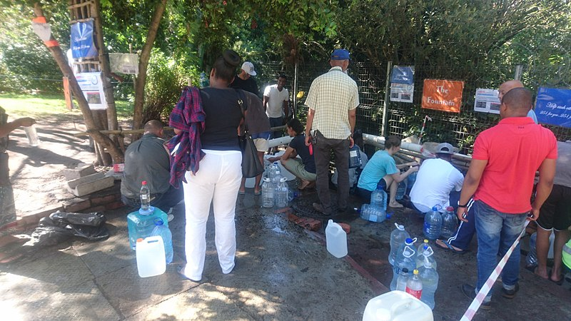
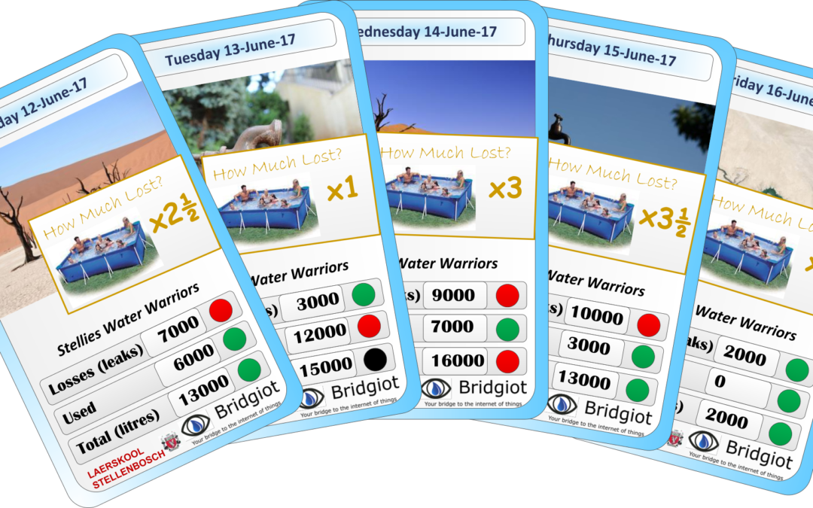

Tools Used
- Building Motivation Over Time
- Feedback
- Financial Incentives and Disincentives
- Norm Appeals
- Prompts
- Mass Media
- School Programs that Involve the Family
- Word of mouth
Initiated By
- Cape Town, South Africa
Results
- Reduced demand by 55% between 2015 and 2018
- Increased the percentage of homes using less than 10,500 l per month from 64% to 81%, with those using less than 6,000 l increasing from 31% to 49%.
Download
Case Study PDF
Landmark Case Study
Day Zero: Cape Town Includes Fear Appeal to Avoid Running Out of Water
Fear appeals must be carefully considered as they can too-easily backfire and discourage people from taking in and acting on our messages. And why spread fear unnecessarily? This case study illustrates an appropriate and effective use of a fear appeal to reduce water consumption in Cape Town South Africa. It tracks 30 years, from the time the City predicted severe water shortages to the point where the taps nearly ran dry and this city of four million people reduced water use enough to avoid disaster. Designated a Landmark case study in 2021.
Background
A Growing City in a Dry Climate Confronts Climate Change
Located in a dry (Mediterranean) climate, Cape Town, South Africa is a city of over four million people that has experienced rapid urbanization and relatively high per capita water consumption. It had traditionally relied on surface water to meet its water needs, but the amount of water available per person kept shrinking as the population continued to grow. Complicating the issue, an increasing amount of water was being used to make products for export. With climate change, rainwater was expected to be less predictable.
In 1990, a Water Research Commission study indicated that the City would run out of water by 2007. While some progress was made in demand reduction over the following years, limited funding and competing priorities delayed the construction of new water sources.
Stepped-Pricing for Water
At about this time, in the post-Apartheid era, and under the Free Basic Water policy, Cape Town adopted an increasing block tariff structure for water pricing. This pricing structure imposed higher tariffs on higher-use customers. The greater the volume of water used, the more each additional unit of water cost. The first level was near zero to ensure equitable access. Further, registered low-income and/or indigent households with a direct water connection got their first 6,000 l of water free. (Financial Disincentives)
Warning Levels with Stepped Restrictions, Higher Prices and Fines
After winter rainfall had been low in 2000–2001 and 2003–2004, the City increased the storage capacity of its reservoirs. It also developed a range of restrictions, fines, and increased water prices at specified warning levels (levels one to seven). In 2005, the City was at Level One. (Financial Disincentives)
In 2007, Cape Town warned its citizens about potential shortages. Then the City experienced some rainy years and other priorities continued to get in the way of a long-term solution. By 2015, Cape Town residents were using an average of 540 l of water/day.
Then, from 2015 to 2018, the City experienced a prolonged drought that was its worst since the 1880s. During 2015 and 2016, it sent “behavioural nudges” to reduce water use by domestic households, but these communications reduced water use by only 0.6 % to 1.3 %.
Cape Town set up websites that tracked reservoir levels and water use, and that helped households understand their water use. It also provided water-saving tips via billboards, radio ads, and flyers sent in water bills.
Warning Levels Two and Three: Restrictions and Warning Letters
The City moved from Level One to Level Two on January 1, 2016 and to Level Three on November 1, 2016. Level Two restricted garden watering to three days a week for a maximum of an hour a day. At Level Three, the three-days-a-week restriction was removed, but watering was banned within 24 hours of a rainfall. Sprinklers and hoses were not allowed for urban and agricultural use, and all swimming pools had to be fitted with pool covers to reduce evaporation.
In February 2017, the City moved to Level 3B, which restricted garden watering to two days a week, one hour a day.
In March 2017, Cape Town sent personalised letters on the Mayor’s signature to households that used over 50,000 l/month. These communications warned of severe consequences if consumption were not reduced. This lowered use by 3%. (Vivid, Personalized, Credible Communications)
In 2017 and 2018, the City’s water reservoirs were filled at only 10-30% capacity. In 2017, Cape Town had the lowest rainfall on record.
.jpg)
Photo credit: Giorgos Siatras, Creative Commons
Levels Four and Five: Restriction Devices
On June 1, 2017, the City went to Level Four, issued a drought crisis warning, and strongly encouraged a water limit of 100 l/person/day. Garden watering was banned within a week after rainfall.
The City began reducing its water pressure, which meant less water delivered per unit of time, as well as less water leakage and pipe bursts.
On July 1, Cape Town moved to Level 4B and water use was restricted to 87 l/person/day.
In August, it launched a Water Resilience Plan that required the installation of water restriction devices at the owners’ expense (at R4,500 or US$314), when restrictions were not being observed despite written warnings. These devices cut supply to a trickle once a daily maximum was reached. This maximum could be increased based on the number of people living in the home. The media covered the Mayor personally installing a number of these devices in December. By March 2018, 46,000 had been installed. They were considered one of the most adversarial and controversial of the measures introduced.
On September 3, 2017, the City moved to Level Five restrictions. That included banning outdoor and non-essential use of water and encouraging grey water use for flushing toilets. However, many households were not complying. The Level Five restriction announcement had an ambiguous statement on household limits, which led some households to increase their water use.
At this time, non-residential properties were asked to reduce consumption by 20% compared with September 2016. Farms were asked to reduce consumption by 30% compared with September 2016.
The City tried but discontinued some shame appeals – publishing the names of high users, publishing the street names of high users, and driving through neighborhoods that were using too much water with a bullhorn calling them out.
Starting in 2017, the City began published weekly updates on reservoir levels and water use. It also used electronic boards on freeways to notify drivers how many days of water supply Cape Town had left.
Household water use declined but more than half of residents were still ignoring the voluntary restrictions.
As the crisis worsened, Cape Town considered implementing a stronger fear appeal. Governments are reticent to declare that a calamity is coming, for two main reasons. First, they may be accused of bad management. However, in uncertain times, institutions must be honest to be trusted. Second, governments are cautious of fear appeals because they have often backfired. However, behavioral scientists have clarified that fear appeals do work at times when the public perceives themselves to be facing a genuine and significant threat, and when they think they are able to take steps to mitigate that threat (e.g. Rogers’ theory of protective motivation,1975 and Witte and Allen’s meta-analysis, 2000.) The situation in Cape Town had the makings to be one of those times.
In October 2017, the City released a Critical Water Shortages Disaster Plan. Phase One involved water rationing through more extreme pressure reductions. Phase Two involved the Day Zero campaign.
Setting Objectives
The objective of the Day Zero campaign was to reduce water use sufficiently, over a four-month period, to avoid turning off the taps to enforce further, drastic reductions.
Getting Informed
The household campaign was critical. Over half (54%) of Cape Town’s water use was from homes, with an additional 9% from multi- residential buildings. Previous studies on water reductions during droughts had made the following observations.
- To drive demand-side management of water resources, better results were achieved by water use restrictions and educational campaigns than by incentives to use water conservation technologies (Dascher et al., 2014).
- There was a strong correlation between media coverage of severe weather (drought) and reduced monthly use (Booysen et. al., 2018.)
Delivering the Program
On January 1, 2018, Cape Town moved to Level Six and started issuing fines to people exceeding their water limits. Non-residential properties were to reduce consumption by 45% compared with 2015, and farms were to reduce consumption to 60% compared with 2015.
Then, on January 18, the Mayor issued a press statement launching the Day Zero campaign and indicating that Day Zero was forecast to occur on April 22. Day Zero referred to the day when Level Seven water restrictions would be implemented, municipal water supplies would largely be switched off, and residents would have to line up for daily water rations of half that amount - 25 l/day/person. (Mass Media)
At that time, the Provincial Cabinet announced that it was preparing for the South African Police Service to station officers at water distribution points across the City after Day Zero.
This fear appeal made the possible consequences of running dry more vivid and visceral, while also clearly spelling out what needed to be done. (Vivid, Personalized, Credible, Empowering Communication)

Newland Springs, one of the water distribution points where residents would have had to line up for their rations. Photo credit: Discott, Creative Commons
{kind=link}
In February, 2018 Cape Town moved to Level Six B. Residents were required to use just 50 l/person/day. To put this amount into perspective, the World Health Organization was recommending a minimum, average consumption of 15-20 l/day, the U.K. was using 150 l/person/day and the USA was using 300 l/person/day.
Clear, Easy to Understand Requests for Action
Capetownians were asked to take a range of priority conservation actions, such as the following.
- Flush toilets using rainwater or grey water after defecating, and do not flush after urinating
- Reduce the amount of water in the toilet’s flush tank by placing a full glass bottle in the tank.
- Reduce the length and frequency of showers, or take sponge baths
- Use hand sanitizers in offices and public buildings, in place of handwashing
- Wash clothes less often
- Capture and reuse water from showers and washing machines
To clarify these behavioral requests, the City produced a new poster that showed how much water might be used for various daily activities, to stay under the 50 l limit.

Cape Town Water Map
For the four months from January to April 2018, Cape Town published a city-wide water map with green dots showing which houses were doing a good job saving water. While this approach was intended to highlight positive behavior rather than shaming negative behavior, it still proved controversial. Some thought it was a privacy violation that shamed households that did not appear on the map. That said, this approach is credited with putting water at the forefront of everyday conversations. (Norm Appeals)
According to Gareth Morgan, the City’s Chief Resiliency Officer, "Around the barbecue, around the dinner table, people spoke about water, and people took great pride in how they were saving water and what extremities they were going to in order to reduce water." (Word of Mouth)
Shower Song Prompts
Cape Town partnered with ten of South Africa’s most popular musical artists, who cut down their top tracks to two minutes. The City asked people to listen to these two-minute songs as they showered – reminding them in a positive, light-hearted way when to turn off the shower to do their part. (Building Motivation Over Time; Prompts)
Group Feedback
Collective feedback was provided each time water use went down, which helped remind and motivate people to keep going (Building Motivation Over Time, Mass Media, Prompts).
Avoiding Negative Social Proof
In early 2018, to get Capetonians to report their neighbours who were not complying, some City communications referenced the fact that half of homes were still were still not complying. Noting that this might signal that this was the norm (social proof) and frustrate those who were working hard to save, this approach was discontinued. (Norm Appeals)
School Program
In 2018, a partnership between the University of Cape Town and Stellenbosch University investigated the impact that a combination of smart water meters, basic infrastructure upgrades and behavioral interventions could have on reducing water usage at schools across the Western Cape. It aimed to both save water at the schools and raise awareness with the families, through their children. This project was branded the #SmartWaterMeterChallenge. (School Programs that Influence the Family)
The challenge encouraged students to do their part, including harvesting rainwater and bringing water to school.
In all, 345 schools received smart water meters and basic infrastructure upgrades. A plumber was assigned to each school, provided with a list of allowed quick fixes and given a maximum budget of R 5,000.
The schools were split into three groups for testing the behavioral interventions.
- Weekly feedback report with graphs illustrating water use.
- As for group one plus entry in an inter-school competition. These schools were also given a leader board, updated weekly, that ranked participating schools by water savings.
- Control group

Special playing cards were used to raise awareness about the water shortage at schools. Photo credit: PetrusLoi. Creative Commons
Businesses as Influencers
As higher water prices came into effect, businesses increased efforts to engage their customers and employees in saving water. For example, restaurants and bars put up bathroom signs saying “If it’s yellow, let it mellow...” Other businesses ran dirty shirt” challenges for going the longest without washing one’s work shirt. Increasing Supply Concurrently, the City worked to increase its water supply by tapping into new aquifers, building temporary (pilot) desalination plants and drilling new wells.
Success and Looking Forward
Water use continued to fall, and June 2018 brought heavy rain. Reservoir levels steadily increased and the City pushed back Day Zero, first to May 11, then June 4, and then July 9. On June 28, 2018, Day Zero was postponed indefinitely. In September 2018, with its reservoirs close to 70% full, Cape Town eased water restrictions and pricing to Level 5. By 2020, levels reached 95% and water rates had fallen to the second lowest level possible.
Financing the Program
The school program was made possible through sponsorship from 93 corporate entities, including Shoprite Holdings Africa’s largest retailer), Shoprite suppliers, Cape Talk radio, and Bridgiot. Other partners included Stellenbosch University, the Western Cape Department of Education, and the Department of the Premier. Each partner adopted one or more schools, with Shoprite supporting 100 schools.
Measuring Achievements
Aggregate Water Use
The City measured its success using two main metrics – aggregate water served and reservoir levels / volumes.
Smart Meters and Public Reactions
In addition, the research team at the University of Cape Town and Stellenbosch University used smart meters to compare water use in a sample of homes in Cape Town to that of 103 homes in two other regions in South Africa, Mpumalanga and Gauteng. While these towns were not affected by the drought, they experienced similar drivers of change as Cape Town.
Between August and October 2017, the team used Talkwalker to analyze public reactions to the campaign on social media, and Google Trends to look at related Internet searches.
Schools
The school study compared water savings in each of the two treatment groups with those in a control group.
Feedback
Collective feedback was provided each time water use went down.
Results
The International Water Association recognized Cape Town as the world’s “number one” water saving city for reducing demand by 55% between 2015 and 2018 without resorting to intermittent supply.
- The City’s daily average water use fell from 1,200 million l (317 million gallons) in February 2015, to 500 million l (132 million gallons) in February 2018.
- From December 2017 to March 2018, the percentage of single-family homes using less than 10,500 l (2,773.8 gallons) of water per month increased from 64% to 81%, with those using less than 6,000 l (1,585 gallons) increasing from 31% to 49%.
- Consumers reduced average household water usage from 540 to 280 l/household/day over the 36 months between January 2015 and January 2018. The most dramatic change in behavior began in January 2018, with the introduction of the Day Zero campaign.
- Booysen, Visser and Burger show that the largest reductions in household water use did not occur on September 3, 2017, when Cape Town moved to Level 5. Rather, they occurred between September 11 and September 17, when the City announced its Disaster Plan that put a date on Day Zero and warned of disastrous outcomes. Further, this decline matched the pattern the researchers observed in the social media and Internet search analysis, which revealed increased panic after September 11. The researchers concluded that the announcement of tighter water restrictions and higher prices “had less effect on the social mindset than the media frenzy and scaremongering that ensued after the release of the Critical Water Shortage Disaster Plan, which referred to the risk of running out of water, the possibility of having to queue for a ration of drinking water at collection points, and the increased threat of fire and disease in crowded settlements.” Their research “seems to indicate that while inciting some level of fear-mongering may have been a risky strategy for the municipality to undertake, it may have been the single most successful intervention in effecting profound behavioral change amongst citizens.“
School Program
- The basic infrastructure repairs (quick fixes) cost R 5,000 (US$ 308) per school and reduced water leaks by 28% within five days.
- The behavioral interventions led to reductions in water use of between 15% and 26%.
The information intervention made the greatest difference to night-time use – when only the maintenance staff were in the buildings. The competitions made the greatest difference to daytime water use – when the teachers and students were using school water. - Across all 345 participating schools, a total investment of R10.5 million (US$ 650,000) yielded savings of 550 million l of water and R39 million (US$ 2.4 million) over17 months. At full scale, these interventions were predicted to provide a return on investment of R1.5 billion (US$ 93 million) in the first year. Roughly half of the savings can be attributed to the behavioral interventions.
Notes
Cape Town piloted its City Water Resilience Approach in 2019. This framework provides a diagnostic tool that includes 60 indicators of water resilience within four areas of focus: ecosystems, communities, households, and businesses.
References
Booysen, M.J., Visser, JM. And Burger, R. (2018). Temporal case study of household behavioural response to Cape Town's Day Zero using smart meter data. Water Research, November 2018. Pre-print accessed in October 2020.
Dascher, E.D., Jiyun, K., and Gwendolyn, H., 2014. Water sustainability: environmental attitude, drought attitude and motivation. International Journal of Consumer Studies 38, 467{474. doi:10.1111/ijcs.12104. Cited in Booysen et. al. (2018)
Edmond, C., 2019. Cape Town almost ran out of water. Here's how it averted the crisis. World Economic Forum. Accessed in October 2020.
Jacobs, K., 2020. Cape Town dam levels at historic 100.8%. Cape Town etc., October 5, 2020. Accessed in October 2020.
Parks, R., McLaren, M, Toumi, R. and Rivett, U., 2019. Experiences and lessons in managing water from Cape Town . Grantham Institute Briefing paper No 29, Feb. 2019. Accessed in October 2020.
Perrott, D., 2018. What the Cape Town water crisis can teach us about applying behavioural science. Medium, March 13 2018. Accessed in October 2020.
Quesnel, K.J., Ajami, N.K., 2017. Changes in water consumption linked to heavy news media coverage of extreme climatic events. Science Advances 3. doi:10.1126/sciadv.1700784. Cited in Booysen et. al. (2018)
Rogers, R.W., 1975. A protection motivation theory of fear appeals and attitude change. The Journal of Psychology 91 (1), 93{114. doi:10.1080/00223980.1975.9915803. pMID: 28136248. See also here. Accessed in October 2020.
Teale, C., 2020. The 'water literacy' lessons cities can learn from Cape Town. Smart Cities Dive, Feb. 24, 2020. Accessed in October 2020.
Wikipedia, 2020. Cape Town water crisis. Accessed in October 2020.
Witte, K., Allen, M., 2000. A meta-analysis of fear appeals: Implications for effective public health campaigns. Health Education & Behavior 27 (5), 591-615. doi:10.1177/109019810002700506. See also here.Accessed in October 2020.
This case study was written in 2020 by Jay Kassirer, based on the references listed above.
Search the Case Studies